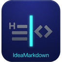

当前版本 v0.1.4 · 支持 Windows。安装包已附带 AI 控制所需的 MCP 服务器与 CLI。
NSIS .exe · 一键安装到本地用户目录
.exe
MCP 服务器与命令行 CLI 随安装包一同安装
安装 IdeaMarkdown 后，AI 控制所需的 ideamarkdown-mcp.exe 与 ideamarkdown-cli.exe 已在安装目录中，无需单独下载或自行编译。
ideamarkdown-mcp.exe
ideamarkdown-cli.exe
配置方法与命令详见 AI 控制指南。